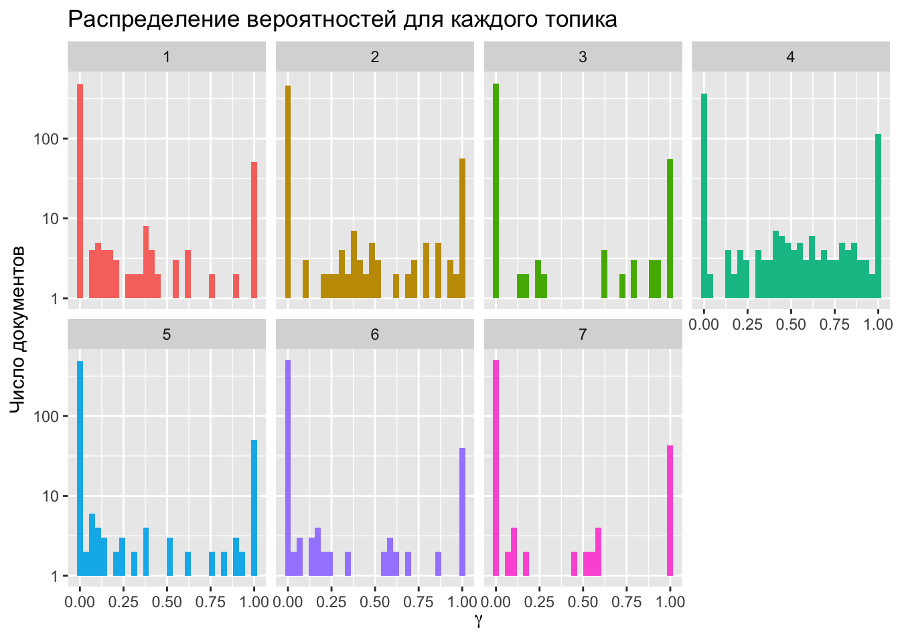

Тема 14 Латентно-семантический анализ
14.1 Что это такое
В этом уроке речь пойдет о таком методе тематического моделирования, как латентно-семантический анализ, или LSA (в области информационного поиска называемый также LSI, Latent Semantic Indexing). Как и LDA, это метод метод обработки информации на естественном языке, который позволяет находить взаимосвязь между коллекцией документов и встречающимися в них терминами за счет сопоставления этих документов и терминов с некоторыми темами.
Слово “скрытый” в названии указывает на то, что семантические взаимосвязи между документами и терминами, как правило, заранее не известны. В исходной термдокументной матрице, которую мы передаем алгоритму, не видно закономерностей. Как раз задача аналитика – их обнаружить, сгруппировав по темам, с одной стороны, термины, а с другой – документы.
Создатели метода называют LSA “теорией смысла” и видят в нем ответ на вопрос о том, как носители языка приходят к пониманию смысла. Как вообще машина может обнаружить “близкие” слова и документы? В 1957 британский лингвист Джон Руперт Фёрс сформулировал это так: you shall know a word by the company it keeps. Томас Ландауер, один из создателей LSA, обобщает этот подход в статье “LSA as a theory of meaning”: синтаксические связи переоценены, и смысл параграфов и целых текстов – это лишь функция от смысла отдельных слов. Смысл – это не статическая константа, а динамическое отношение, или система отношений. На уровне реализации действительно LSA показал способность справляться с задачами, которые до середины 90-х считались прерогативой живого человека. Например, с проблемами полисемии и синонимии.

14.2 Векторное представление слов
Мы можем представить термин в виде вектора, который хранит информацию о его встречаемости в документах. Каждый элемент вектора будет координатой в многомерном пространстве. В англоязычной литературе векторные представления называют эмбеддингами (embedding, т.е. «вложение»). Представляя объект в виде вектора, мы как бы «вкладываем» его в векторное пространство, где действуют геометрические законы.
Дальше дело за вычислением расстояния (или сходства) между векторами – это уже задача из области линейной алгебры. Как правило, в алгоритме LSA используется косинусное сходство (о том, что это такое, см. видео: часть 1 и часть 2).

Трудность в том, что даже для небольших коллекций документов термдокументная матрица является очень разреженной (даже в небольшом примере из предыдущего урока разреженность составляла почти 100%). Чем больше ваш корпус, тем более разреженной будет матрица: это естественно, поскольку в каждом документе встречается лишь небольшая часть всех слов.
Любые действия над такими матрицами требуют больших вычислительных затрат, при этом результат не обязательно будет точным из-за синонимии и полисемии: слово apple можно встретить как в плодово-овощной рубрике, так и в заметке об IT. Справиться с этим помогает метод LSA, в основе которого лежит снижение размерности исходной матрицы.
14.3 Сингулярное разложение матрицы
Мы можем “спроецировать” исходную матрицу \(C_r\) в пространство меньшей размерности. Если r – ранг исходной матрицы, а k – ранг новой матрицы, при этом k значительно ниже r, то матрица \(C_k\) называется малоранговой аппроксимацией.
Рангом системы строк (столбцов) матрицы A с m строками и n столбцами называется максимальное число линейно независимых строк (столбцов). Несколько строк (столбцов) называются линейно независимыми, если ни одна из них не выражается линейно через другие. Ранг системы строк всегда равен рангу системы столбцов, и это число называется рангом матрицы.
Для ее получения новой матрицы применяется трехэтапная процедура:
для \(C_r\) строится ее сингулярное разложение (SVD (Singular Value Decomposition) по формуле: \(C = UΣV^t\) (подробнее см. видео);
по матрице Σ строится \(Σ_k\): \(r - k\) наименьших сингулярных значений на диагонали матрицы заменяются нулями;
вычисляется новая матрица \(C_k = UΣ_kV^t\).
Теперь подробнее.
- Матричное разложение, или факторизация – представление матрицы в виде произведения нескольких матриц. Сингулярное разложение (SVD) матрицы A равно \(A=U⋅Σ⋅V^t\), где
- U — матрица левых сингулярных векторов матрицы A,
- Σ — диагональная матрица сингулярных чисел матрицы A,
- V — матрица правых сингулярных векторов матрицы A.

Строки матрицы U соответствуют словам; а в V^t столбцы соответствуют отдельным документам. Следовательно, первая строка матрицы U показывает, в каких документах встречается слово, а первый столбец V^T показывает, какие темы встречаются в документе.
- Сингулярные значения в диагональной матрице всегда упорядочены по убыванию, и можно без больших потерь отсечь малоинформативные ряды или столбцы. Такое SVD называется усеченным.
Сингулярные векторы (они выделены цветом) в матрицах U и V соответствуют темам в тексте, которых в общей сложности k штук. Чему равно k — человек задает вручную при вычислении разложения. Математически это выражается в том, что в диагональной матрице остается k самых больших сингулярных чисел, а остальные становятся нулями. При перемножении матриц это приведет к отсечению \(r - k\) столбцов в U и \(r - k\) рядов в \(V^t\). (Подробнее).
- Умножение U на Σ дает векторное представление слов; умножение V на Σ– векторное представление документов (Dian I. Martin. Mathematical Foundations Behind Latent Semantic Analysis). Объединяя пространство слов с пространством документов, можно находить ближайшие документы по поисковому запросу (который в рамках этой модели рассматривается как “псевдодокумент”).
14.4 Простой пример
Все это будет понятнее на простом примере. (отсюда).
Допустим, у нас есть пять документов.
d1 : Romeo and Juliet.
d2 : Juliet: O happy dagger!
d3 : Romeo died by dagger”.
d4 : “Live free or die”, that’s the New-Hampshire’s motto.
d5 : Did you know, New Hampshire is in New-England.
Поисковый запрос: dies, dagger. Очевидно, ближе всего к запросу d3, т.к. он содержит оба слова. Но какой документ должен быть следующим? И d2, d4 содержат по одному слову из запроса, а явно релевантный d1 – ни одного.
Составим термдокументную матрицу.
df = data.frame(d1 = c(c(1, 1), rep(0, 6)),
d2 = c(c(0, 1, 1, 1), rep(0, 4)),
d3 = c(1, 0, 0, 1, 0, 1, 0, 0),
d4 = c(rep(0, 4), rep(1, 4)),
d5 = c(rep(0, 7), c(1)))
rownames(df) <- c("romeo", "juliet", "happy", "dagger", "live",
"die", "free", "new-hampshire")
df## d1 d2 d3 d4 d5
## romeo 1 0 1 0 0
## juliet 1 1 0 0 0
## happy 0 1 0 0 0
## dagger 0 1 1 0 0
## live 0 0 0 1 0
## die 0 0 1 1 0
## free 0 0 0 1 0
## new-hampshire 0 0 0 1 1И применим SVD. В R для этого есть специальная функция (дальше мы увидим, что то же самое делают и другие функции).
## [,1] [,2] [,3] [,4] [,5]
## [1,] 2.285 0.00 0.000 0.000 0.000
## [2,] 0.000 2.01 0.000 0.000 0.000
## [3,] 0.000 0.00 1.361 0.000 0.000
## [4,] 0.000 0.00 0.000 1.118 0.000
## [5,] 0.000 0.00 0.000 0.000 0.797Сингулярные значения меньше двух убираем, остается два сингулярных значения.
## [,1] [,2]
## [1,] 2.285 0.00
## [2,] 0.000 2.01Матрица левых сингулярных векторов выглядит так:
## [,1] [,2] [,3] [,4] [,5]
## [1,] -0.396 0.280 0.571 0.450 0.102
## [2,] -0.314 0.450 -0.411 0.513 -0.204
## [3,] -0.178 0.269 -0.497 -0.257 -0.043
## [4,] -0.438 0.369 -0.013 -0.577 0.220
## [5,] -0.264 -0.346 -0.146 0.047 -0.417
## [6,] -0.524 -0.246 0.339 -0.273 -0.155
## [7,] -0.264 -0.346 -0.146 0.047 -0.417
## [8,] -0.326 -0.460 -0.317 0.237 0.725От нее отсекаем все столбцы, кроме первых двух:
## [,1] [,2]
## [1,] -0.396 0.280
## [2,] -0.314 0.450
## [3,] -0.178 0.269
## [4,] -0.438 0.369
## [5,] -0.264 -0.346
## [6,] -0.524 -0.246
## [7,] -0.264 -0.346
## [8,] -0.326 -0.460Матрица правых сингулярных векторов тоже усекается; не забудем ее транспонировать.
## [,1] [,2] [,3] [,4] [,5]
## [1,] -0.311 -0.407 -0.594 -0.603 -0.143
## [2,] 0.363 0.541 0.200 -0.695 -0.229Каждый столбец в этой матрице соответствует одному документу.
Умножим U и Vt на S_truncated (усеченную сигму).
# эмбеддинги слов
word_emb <- round((U_truncated %*% S_truncated), 3)
rownames(word_emb) <- c("romeo", "juliet", "happy", "dagger", "live", "die", "free", "new-hampshire")
word_emb## [,1] [,2]
## romeo -0.905 0.563
## juliet -0.717 0.904
## happy -0.407 0.541
## dagger -1.001 0.742
## live -0.603 -0.695
## die -1.197 -0.494
## free -0.603 -0.695
## new-hampshire -0.745 -0.925# эмбеддинги документов
doc_emb <- round((S_truncated %*% Vt_truncated), 3)
colnames(doc_emb) <- c("d1", "d2", "d3", "d4", "d5")
doc_emb ## d1 d2 d3 d4 d5
## [1,] -0.711 -0.930 -1.357 -1.378 -0.327
## [2,] 0.730 1.087 0.402 -1.397 -0.460Или, что то же самое:
## [,1] [,2]
## [1,] -0.710635 0.72963
## [2,] -0.929995 1.08741
## [3,] -1.357290 0.40200
## [4,] -1.377855 -1.39695
## [5,] -0.326755 -0.46029Умножить матрицу А на В можно лишь в том случае, если число рядов в В равно числу столбцов в А 🤯🤯🤯
Координаты поискового запроса (который рассматриваем как псевдодокумент) считаем как среднее арифметическое координат:
## [1] -1.099 0.124Объединив все в единый датафрейм, можем визуализировать.
library(tidyverse)
all_df <- as.data.frame(rbind(word_emb, t(doc_emb), q_doc))
all_tbl <- as_tibble(all_df, rownames = "item") %>%
mutate(type = c(rep("word", 8), rep("doc", 6))) %>%
rename(dim1 = V1, dim2 = V2)
all_tbl## # A tibble: 14 × 4
## item dim1 dim2 type
## <chr> <dbl> <dbl> <chr>
## 1 romeo -0.905 0.563 word
## 2 juliet -0.717 0.904 word
## 3 happy -0.407 0.541 word
## 4 dagger -1.00 0.742 word
## 5 live -0.603 -0.695 word
## 6 die -1.20 -0.494 word
## 7 free -0.603 -0.695 word
## 8 new-hampshire -0.745 -0.925 word
## 9 d1 -0.711 0.73 doc
## 10 d2 -0.93 1.09 doc
## 11 d3 -1.36 0.402 doc
## 12 d4 -1.38 -1.40 doc
## 13 d5 -0.327 -0.46 doc
## 14 q_doc -1.10 0.124 docТеперь строим график.

Как видно, поисковый запрос оказался ближе к d2, чем к d4, хотя в каждом из документов было одно слово из запроса. Более того: он оказался ближе к d1, в котором не было ни одного слова из запроса! Наш алгоритм оказался достаточно умен, чтобы понять, что d1 более релевантен, хотя и не содержит точных совпадений с поисковыми словами. Возможно, человек дал бы такую же рекомендацию.
Мы исследовали наш небольшой корпус графически, теперь посчитаем косинусное расстояние.
dist_mx <- all_df %>%
filter(row_number() %in% c(9:14)) %>%
philentropy::distance(method = "cosine", use.row.names = T) ## Metric: 'cosine'; comparing: 6 vectors.## d1 d2 d3 d4 d5 q_doc
## d1 1.00000000 0.99792078 0.8724625 -0.02002992 -0.1796188 0.7736415
## d2 0.99792078 1.00000000 0.8391517 -0.08442786 -0.2426496 0.7311943
## d3 0.87246248 0.83915171 1.0000000 0.47110771 0.3240227 0.9846131
## d4 -0.02002992 -0.08442786 0.4711077 1.00000000 0.9871367 0.6180004
## d5 -0.17961877 -0.24264957 0.3240227 0.98713669 1.0000000 0.4843579
## q_doc 0.77364153 0.73119433 0.9846131 0.61800043 0.4843579 1.000000014.5 Векторы слов
Текст хранится в опрятном формате, если одному наблюдению (термину) соответствует один ряд:
library(tidyr)
tidy_corpus <- df %>%
as_tibble(rownames = "word") %>%
pivot_longer(d1:d5, names_to = "doc")
tidy_corpus## # A tibble: 40 × 3
## word doc value
## <chr> <chr> <dbl>
## 1 romeo d1 1
## 2 romeo d2 0
## 3 romeo d3 1
## 4 romeo d4 0
## 5 romeo d5 0
## 6 juliet d1 1
## 7 juliet d2 1
## 8 juliet d3 0
## 9 juliet d4 0
## 10 juliet d5 0
## # ℹ 30 more rowsЧтобы вычислить svd, такой корпус надо преобразовать в широкий формат, произвести все вычисления, а затем “тайдифицировать”. Для подобных операций существует пакет widyr. Функцию pivot_wider() я добавляю лишь для удобства сравнения с тем, что мы получили выше.
library(widyr)
tidy_u <- tidy_corpus %>%
widely_svd(word, doc, value,
nv = 2, maxit = 100) %>%
mutate(value = round(value, 3)) %>%
pivot_wider(names_from = dimension, values_from = value)
tidy_u## # A tibble: 8 × 3
## word `1` `2`
## <chr> <dbl> <dbl>
## 1 romeo -0.396 0.28
## 2 juliet -0.314 0.45
## 3 happy -0.178 0.269
## 4 dagger -0.438 0.369
## 5 live -0.264 -0.346
## 6 die -0.524 -0.246
## 7 free -0.264 -0.346
## 8 new-hampshire -0.326 -0.46Сравним с тем, что у нас получилось выше.
## 1 2
## [1,] TRUE TRUE
## [2,] TRUE TRUE
## [3,] TRUE TRUE
## [4,] TRUE TRUE
## [5,] TRUE TRUE
## [6,] TRUE TRUE
## [7,] TRUE TRUE
## [8,] TRUE TRUEИтак, мы получили только матрицу левых сингулярных векторов. Чтобы получить word_emb, используем аргумент weight_d:
tidy_word_emb <- tidy_corpus %>%
widely_svd(word, doc, value,
nv = 2, maxit = 100,
weight_d = T) %>%
mutate(value = round(value, 3))
tidy_word_emb %>%
pivot_wider(names_from = dimension, values_from = value)## # A tibble: 8 × 3
## word `1` `2`
## <chr> <dbl> <dbl>
## 1 romeo -0.905 0.563
## 2 juliet -0.718 0.904
## 3 happy -0.407 0.541
## 4 dagger -1.00 0.741
## 5 live -0.603 -0.695
## 6 die -1.20 -0.495
## 7 free -0.603 -0.695
## 8 new-hampshire -0.746 -0.924Сравнив с word_emb выше, видим, что округление не всегда с точностью до тысячных совпадает, но в остальном все ок.
14.6 Пакеты для работы с LSA
14.6.1 lsa
Имея матрицу документ-термин, мы можем быстро построить модель, воспользовавшись функцией lsa() из одноименного пакета. Она требует на входе матрицу документ-термин, Функция вернет список, в котором хранятся элементы под названием tk, dk, sk. Они соответствуют матрице правых сингулярных векторов V, матрице правых сингулярных векторов U, а также сингулярным значениям.
Чтобы построить эмбеддинги документов, следует перемножит диагональную матрицу и \(V^t\):
Еще одна полезная функция из пакет lsa перемножает все три матрицы:
Внутри у этой функции происходит следующее:
Эту матрицу тоже можно использовать для вычисления косинусного расстояния между терминами или документами.
14.6.2 TextmineR
Все те же задачи решает пакет textmineR, но могут быть проблемы с его установкой на MacOS. Как их решить, см. здесь.
Если справились с установкой:
Функция вернет список; при этом матрица правых сингулярных векторов здесь называются “тета”, а матрица левых сингулярных векторов называются “фи”; см. виньетку). Работать с этими матрицами можно как описано выше.
Те же задачи решаются при помощи пакетов text2vec, word2vec, и некоторых других. Ниже мы рассмотрим, как строить эмбеддинги с использованием принципов tidyverse.
14.7 LSA c использованием Tidy Data
Загружаем датасет с постами из телеграм-канала Antibarbari, предварительно подготовленными для анализа, и удаляем очень редкие слова.
load("data/antibarbari_words_tidy.Rdata")
text_pruned <- text_tidy_nosw %>%
add_count(lemma) %>%
filter(n > 4) %>%
select(-n)Функция nest() собирает все слова для каждого документа в отдельный тибл.
## # A tibble: 6 × 2
## doc_id words
## <chr> <list>
## 1 doc1 <tibble [4 × 1]>
## 2 doc2 <tibble [8 × 1]>
## 3 doc3 <tibble [6 × 1]>
## 4 doc4 <tibble [19 × 1]>
## 5 doc5 <tibble [22 × 1]>
## 6 doc6 <tibble [32 × 1]>На небольших датасетах как наш может быть непродуктивно строить эмбеддинги с использованием абсолютной частотности или tf-idf, поэтому я воспользуюсь решением, предложенным в книге Джулии Силги и Эмиля Хвитфельдта (источник). Тексты делятся на “скользящие окна”, а затем для каждого окна считается PMI (мера ассоциации между словами).

slide_windows <- function(tbl, window_size) {
skipgrams <- slider::slide(
tbl,
~.x,
.after = window_size - 1,
.step = 1,
.complete = TRUE
)
safe_mutate <- safely(mutate)
out <- map2(skipgrams,
1:length(skipgrams),
~ safe_mutate(.x, window_id = .y))
out %>%
transpose() %>%
pluck("result") %>%
compact() %>%
bind_rows()
}Применив эту функцию к нашим данным, получаем:
tidy_pmi <- nested_words %>%
mutate(words = map(words, slide_windows, 4L)) %>%
unnest(words) %>%
unite(window_id, doc_id, window_id) %>%
pairwise_pmi(lemma, window_id)## # A tibble: 112,592 × 3
## item1 item2 pmi
## <chr> <chr> <dbl>
## 1 исследования фгн 6.83
## 2 фгн исследования 6.83
## 3 квалификация повышение 6.76
## 4 повышение квалификация 6.76
## 5 густой острый 6.43
## 6 острый густой 6.43
## 7 карточка набор 6.31
## 8 набор карточка 6.31
## 9 косвенный реальность 6.26
## 10 реальность косвенный 6.26
## # ℹ 112,582 more rowsЭтот тиббл передаем фунции widely_svd() для построения сингулярного разложения. Обратите внимание на аргумент weight_d: если задать ему значение FALSE, то вернутся не эмбеддинги, а матрица левых сингулярных векторов.
Исследуем наши эмбеддинги, используя функцию, которая считает косинусное сходство между словами.
nearest_neighbors <- function(df, token) {
df %>%
widely(
~ {
y <- .[rep(token, nrow(.)), ]
res <- rowSums(. * y) /
(sqrt(rowSums(. ^ 2)) * sqrt(sum(.[token, ] ^ 2)))
matrix(res, ncol = 1, dimnames = list(x = names(res)))
},
sort = TRUE
)(item1, dimension, value) %>%
select(-item2)
}Результат, кажется, вполне осмысленный.
## # A tibble: 1,810 × 2
## item1 value
## <chr> <dbl>
## 1 математика 1
## 2 теорема 0.710
## 3 несоизмеримость 0.703
## 4 математик 0.652
## 5 феодор 0.650
## 6 доказывать 0.649
## 7 пересказ 0.623
## 8 представитель 0.601
## 9 чертеж 0.599
## 10 историк 0.578
## # ℹ 1,800 more rowsДля большей наглядности некоторые из главных компонент (или топиков) можно представить на графике.
tidy_word_emb %>%
filter(dimension < 10) %>%
group_by(dimension) %>%
top_n(12, abs(value)) %>%
ungroup() %>%
mutate(item1 = reorder_within(item1, value, dimension)) %>%
ggplot(aes(item1, value, fill = as.factor(dimension))) +
geom_col(alpha=0.8, show.legend = F) +
facet_wrap(~dimension, scales = "free_y", ncol=3) +
scale_x_reordered() +
coord_flip()
Имея эмбеддинги слов и матрицу документ-термин, можно создать пространство документов той же размерности. Для этого перемножаем две матрицы.
## [1] 719 1810## [1] 1810 50## [1] 719 50## [1] "dgCMatrix"
## attr(,"package")
## [1] "Matrix"Превратим разреженную матрицу обратно в датафрейм и посчитаем косинусное расстояние между рядами.
tidy_doc_emb <- as.data.frame(as.matrix(doc_mx))
dist_mx <- tidy_doc_emb %>%
philentropy::distance(method = "cosine", use.row.names = T)## Metric: 'cosine'; comparing: 719 vectors.Небольшой фрагмент этой матрицы.
## doc1 doc10 doc100 doc101 doc102 doc103
## doc1 1.0000000 0.7605686 0.7745078 0.7564402 0.8680997 0.6893900
## doc10 0.7605686 1.0000000 0.7793400 0.7294682 0.8687391 0.7985651
## doc100 0.7745078 0.7793400 1.0000000 0.8741178 0.8483274 0.7927676
## doc101 0.7564402 0.7294682 0.8741178 1.0000000 0.8428310 0.7821788
## doc102 0.8680997 0.8687391 0.8483274 0.8428310 1.0000000 0.7901311
## doc103 0.6893900 0.7985651 0.7927676 0.7821788 0.7901311 1.0000000
## doc104 0.6680614 0.7093569 0.8846958 0.8617179 0.8061694 0.8180705
## doc105 0.7110572 0.7250496 0.8507740 0.8965854 0.8352048 0.8029635
## doc106 0.4115312 0.4874521 0.6176151 0.6926529 0.6055048 0.5170057
## doc107 0.3091917 0.3801341 0.5143291 0.5547815 0.4564905 0.5198729Теперь нам нужна функция для поиска ближайших соседей.
nearest_doc <- function(dist_mx, doc, n) {
idx <- which(rownames(dist_mx) == doc)
subset <- dist_mx[idx, 1:ncol(dist_mx), drop = F]
ord <- order(subset, decreasing = T)
names(subset[, ord])[1:n]
}
nearest <- nearest_doc(dist_mx, "doc31", 3)
nearest## [1] "doc31" "doc94" "doc40"Чтобы оценить адекватность этого результата, загрузим датасет с текстом постов (до удаления стоп-слов). Там много всего, распечатаем только нужное.
load("~/R_Workflow/Text_Analysis_2023/data/AntibarbariTidy.Rdata")
print_post <- function(doc) {
text_tidy %>%
distinct(doc_id, sentence) %>%
filter(doc_id == doc) %>%
group_by(doc_id) %>%
mutate(text = paste0(sentence, collapse = " ")) %>%
distinct(doc_id, text) %>%
pull(text)
}
map(nearest, print_post)## [[1]]
## [1] "Семинар по Филебу. марта г. Искать благо следует в его \"обители\", смешанной жизни, а само смешение должно быть наилучшим. Сократ и Протарх решают для начала включить в смешанную жизнь лишь самые подлинные части удовольствия и разумения —возникает вопрос, что делать не с такими подлинными, но необходимыми частями."
##
## [[2]]
## [1] "Семинар . Читаем \"Филеб\" . Выяснив, что причиной любой благой смеси будут истина, мера и красота, Сократ предлагает сравнить с ними удовольствие и разум. Протарх, не задумываясь, говорит, что и истина, и мера, и красота ближе к уму, чем к удовольствию. При этом он упоминает сильные удовольствия, в первую очередь любовные, хотя еще раньше собеседники договорились, что всем интенсивным наслаждениям нет места в благой жизни. Возможно, как указывают Хакфорт и Делькомминет, дело в том, что удовольствия рассматриваются сами по себе, каковы они по природе (πεφυκός, ), так что умеренные и чистые удовольствия от познания остаются без рассмотрения."
##
## [[3]]
## [1] "Семинар . Читаем \"Филеб\". Для хорошей жизни знания нужны не только самые чистые, но и необходимые -- да и вообще все безвредные не помешают. С удовольствиями похожая история: Сократ и Протарх добавляют не только наилучшие, но и необходимые. На повестке вопрос, не станет ли жизнь лучше, если добавить вообще все."